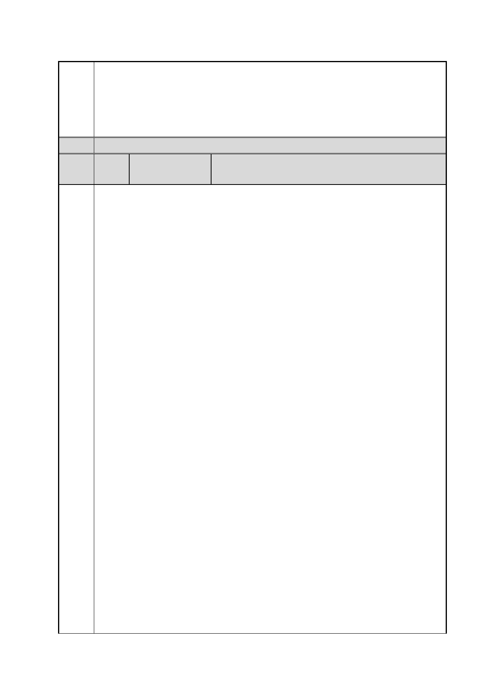

臺北市都市計畫委員會 公民或團體陳情意見綜理表
案
名
決議
編
號
陳情
理由
與
建議
辦法
「變更臺北市信義區逸仙段二小段 33 地號等 21 筆土地（原臺北機廠）
工業區為創意文化專用區、特定專用區、道路及綠地用地主要計畫案」
及「擬定臺北市信義區逸仙段二小段 33 地號等 21 筆土地（原臺北機
廠）創意文化專用區、特定專用區、道路及綠地用地細部計畫暨劃定
都市更新地區計畫案」
60 陳情人
立法委員 管碧玲服務處
我們對鐵路局台北機廠，都市計畫的主張與要求如下：
一、全區保留。因為鐵路局台北機廠是由劉銘傳台北機械局開始，流
傳演化至今的台灣工業發展歷史現場。應該全區保存以維護國
家最重要工業歷史現場的完整性，都市計畫使用區分不可破壞
其完整性。
二、台北機廠現存鐵路地下化的見證，也是緊急救災避難的通道，都
市計畫應有遠見加以保存。台北機廠現存有大台北地區鐵路地
下化後，從汐止到樹林之間，唯一僅存的「開放性地面月台」
與「地下化引道」。我們強烈主張：鐵路地下化後，在台北機廠
的「地下化引道」與「開放性地面月台」，都必須保存，並且不
允許其上與周邊有任何可以興建建築的任何使用區分。一方面
是地下化歷史的見證建築的保存，另方面從都市計畫的角度
看，也是鐵路地下化後，極少數可以讓重型機器、車輛等等救
災工具，進入地下化鐵路區的通路，必須保存下來，以便萬一
重大災害、災難發生時，稍加整修改造即可成為救災通路，是
唯一可使重型機械，直接由地面進入救災現場的通道。都市計
畫應保全其救災防災的所有可能通路，才是為千百年負責的都
市計畫遠見，都市計畫委員會不可不知，也不可不慎。
三、我國現存最古老的國寶機械－劉銘傳機械局的蒸汽動力鎚，是世
界級文化資產：台北機廠現存我國最古老的國寶機械－劉銘傳
機械局的蒸汽動力鎚。該蒸氣動力鎚是 1889 年在英國蘇格蘭格
拉斯高所製造，是從劉銘傳台北機械局保存至今的機械，是我
國現存最古老的機械，也是珍貴的世界級國寶。日本人於 1905
年才始建台灣第一座水力發電廠，因此在清代劉銘傳的機械局
主要動力還是蒸汽。我們都知道瓦特發明蒸氣機，是工業革命
的肇始，台北機廠的這座蒸汽動力鎚，及其相連的蒸汽管路等
配備，是多麼的重要珍貴。所以台北機廠應全區保存，才足以
保存與顯現其整區動力裝置的規劃與設計之巧思。
四、台北機廠有幾個工廠區的地板是以檜木塊拼鋪的，是重要的工業
文化資產。這種設計有幾個理由：一、吸油。二、止滑。三、
第 96 頁/共 154 頁